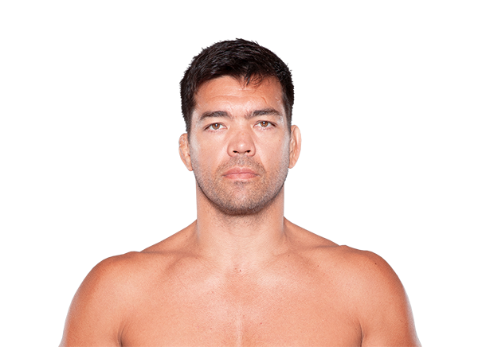

Lyoto Machida es un destacado peleador brasileño de MMA, conocido por su estilo karateka y su defensa estratégica. Nació el 30 de mayo de 1978 en Salvador, Brasil, y desde joven entrenó karate tradicional y jiu-jitsu brasileño, combinando estas disciplinas para desarrollar un estilo único en el octágono.
Machida se convirtió en campeón de peso semipesado de UFC, destacándose por su precisión, defensa y capacidad de esquivar ataques, lo que le permitió vencer a muchos oponentes poderosos. Su estilo es elegante, técnico y a la vez letal, lo que lo hizo muy respetado tanto por fanáticos como por sus rivales.

Otros que podrían interesarte: